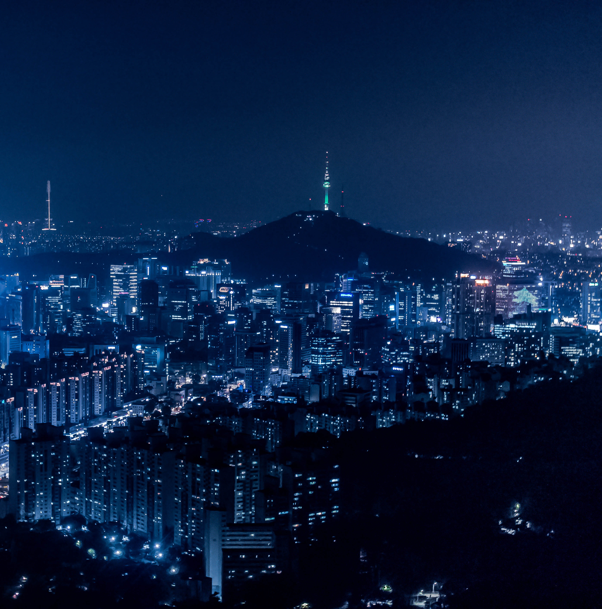

- machu picchu
- rishikesh
- hanalei
- toscana
- seoul
seoul
officially the Seoul Special City, is the capital[7] and largest metropolis of South Korea.[8] Seoul has a population of 9.7 million people, and forms the heart of the Seoul Capital Area with the surrounding Incheon metropolis and Gyeonggi province. Seoul was the world's 4th largest metropolitan economy in 2014 after Tokyo, New York City and Los Angeles.[9] In 2017, the cost of living in Seoul was ranked the 6th highest globally.[10][11]
With technology hubs centered in Gangnam and Digital Media City,[12] the Seoul Capital Area is home to the headquarters of 14 Fortune Global 500 companies, including Samsung,[13] LG, and Hyundai. The metropolis exerts a major influence in regional affairs as one of the five leading hosts of global conferences; as of 2018 it was ranked 3rd in the world after Singapore (1st) and Brussels (2nd).[14] Seoul has hosted the 1986 Asian Games, 1988 Summer Olympics, 2002 FIFA World Cup (with Japan), and the 2010 G-20 Seoul summit.

Capital of Korea